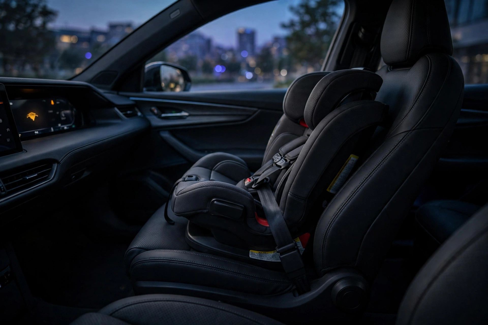

Kia Recalled 21,290 EV9s Because Adjusting the Passenger Seat Can Disarm the Child Airbag Sensor

The Occupant Detection System in the Kia EV9 has exactly one job: notice when a child is in the front passenger seat and keep the airbag off. Kia has now told federal regulators that moving that seat can break the system, not in a crash and not through misuse. By sliding the seat upward, which is something seats are built to do. 21,290 EV9s from the 2025 and 2026 model years are now recalled under NHTSA campaign 26V545.[1]
Here is the mechanism, straight from Kia’s filing. A supplier misrouted the bladder tube for the ODS sensor mat underneath the front passenger cushion. Push the seat to its highest position and the tube gets pinched between the hardware. Adjust the seat enough times and the pinched tube is damaged, after which the system can no longer distinguish a child seat from an adult occupant. So the airbag stays armed, and the vehicle flunks the child-suppression requirement of Federal Motor Vehicle Safety Standard 208.[2][3] Only EV9s built at Kia’s Georgia plant are affected. The 2025s built in Korea are exempt, which tells you this is a process failure on one assembly line, not a design failure in the engineering office.
Now consider who runs a passenger seat at maximum height. Shorter drivers, as a rule, and most of the seat-height adjustment in family cars happens because someone on the shorter end of the household needs to see over the hood. I will not dress this up as a proven finding, since Kia’s filing contains no demographic data, but the geometry of the defect selects for exactly the seating position a parent uses when the kids are along for the ride, an irony worth sitting with.
The tells, if you know to look, are an airbag warning light on the cluster and a seatbelt reminder chiming for a passenger seat that is visibly empty. Either one means the system has lost track of who is sitting where, and until a dealer inspects it, that seat is unverified for child occupancy.[1] Kia says it knows of no injuries tied to the defect, and the math deserves a calm reading: 6 percent of 21,290 is roughly 1,277 vehicles (21,290 × 0.06 = 1,277.4), so the recall population overstates the at-risk fleet by about seventeen to one.
And now the defense, at full strength, because it is a good one. Kia found this itself, reported it, and is fixing it free, with dealers replacing the mat, the bladder tube, and the seat cover assembly where the routing is wrong.[4] Zero injuries are on the board. And the owner’s manual already says children thirteen and under ride in the rear seat, where this defect cannot touch them; a household that follows that rule has an at-risk population of exactly zero. This is the recall system doing what it was built to do, catching a silent failure before it ever had to explain a loud one.
What to do: If you own a 2025 or 2026 EV9, run your VIN at nhtsa.gov/recalls now instead of waiting for the owner letter, which Kia does not expect to mail until October 20.[4] Treat an unexplained airbag light or a phantom seatbelt chime as a real signal: keep kids out of that seat until the dealer clears it. Keep children thirteen and under in the rear seat regardless, which was the rule before this recall and remains the rule after it. Shopping used? Georgia-built 2025 and 2026 EV9s need recall SC379 on the service record before money changes hands.
What this does not prove: Nobody has been hurt, so FARS has nothing to say about this defect and no body count exists to analyze. The 6 percent figure is Kia’s estimate, filed with the regulator, not an independent teardown count. The shorter-driver observation is inference from seat geometry, not evidence from the defect population. And the Korea-built exemption narrows the suspect pool to a Georgia assembly process, which is useful forensics but not proof of what exactly went wrong on that line.
Sources & References
- Joey Klender, “Kia is recalling over 21,000 EV9 SUVs over a faulty airbag issue,” Electrek, August 28, 2026. electrek.co
- Kristen Brown, “Kia Recalls 21,290 EV9s Because Airbags May Deploy With a Child Up Front,” Autoblog, August 27, 2026. autoblog.com
- “Kia’s Three-Row EV9 Recalled Over Airbag Issue,” Carscoops, August 2026. carscoops.com
- “Kia recalls 21,290 SUVs over airbag issue that could injure children,” Fox Business, August 2026. foxbusiness.com
- NHTSA, Recalls Database — VIN lookup for campaign 26V545. nhtsa.gov
Source: Kia’s Part 573 filing as reported via secondary coverage, August 2026, with defect-rate estimates manufacturer-reported; see methodology for caveats.